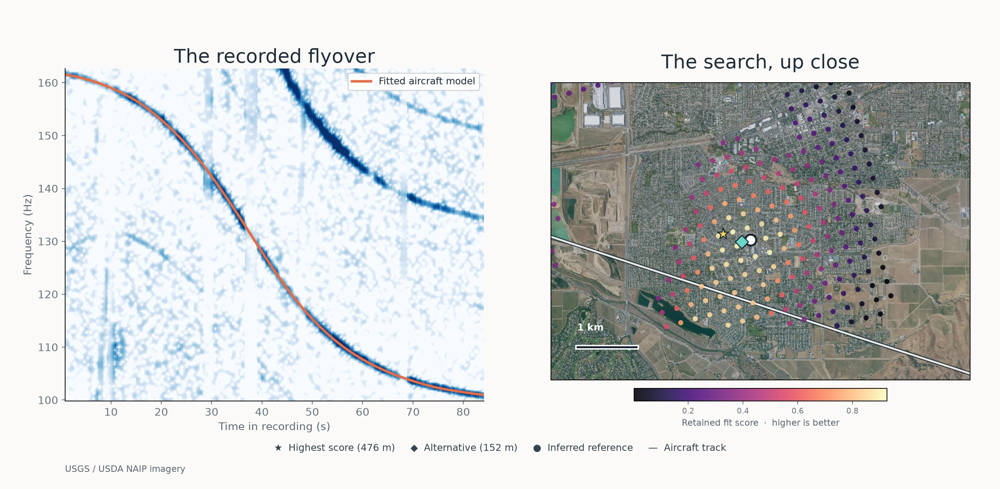
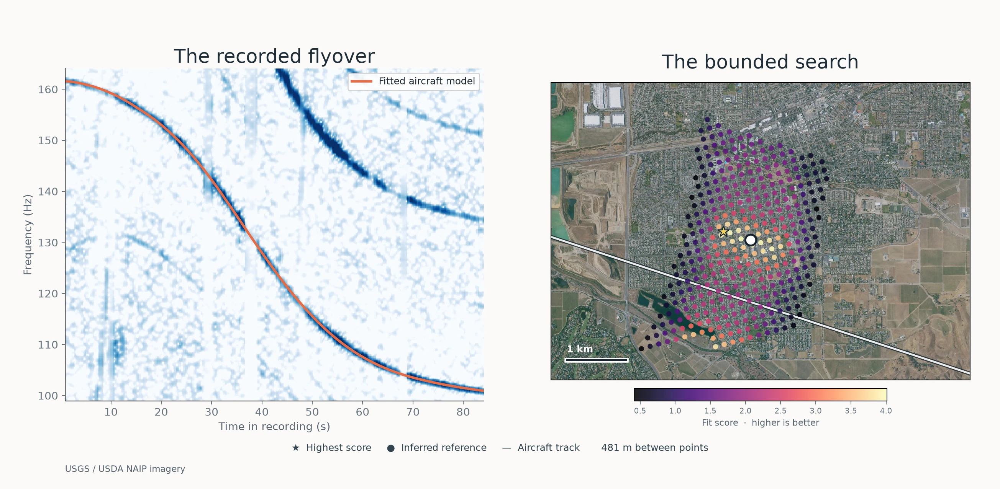
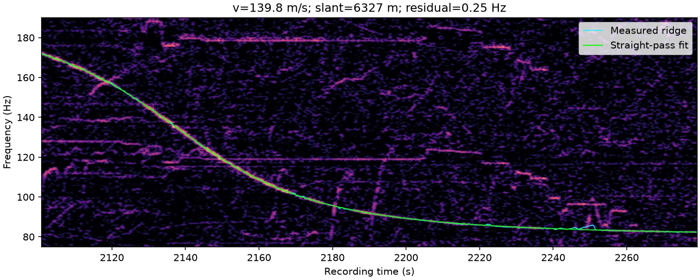
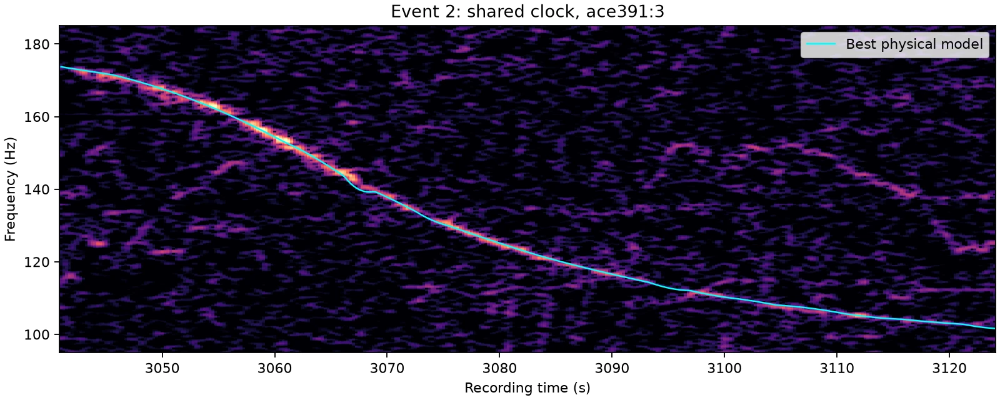
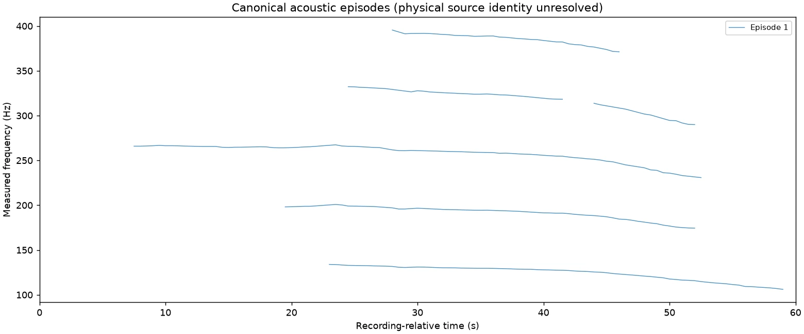

From the recordings.
Real recordings, measured frequency curves, and candidate maps. Each figure shows a different part of the search; a high score alone does not establish a location.
Livermore, California
The automatic MP3 search and a configured run of the same recording. Both produced ranked candidates without accepting a location. Read the experiment.
Automatic MP3 search

Configured search

Reading the frequency.
Measured tones and the aircraft models fitted to them.
The measured ridge


The flight-path model

A second passage

Finding the flyovers.
Automatic discovery across an entire recording, then a closer look at grouped acoustic traces.
Across the recording

Grouping the traces

Searching the map.
Each point is a possible microphone location. Color shows the fit score; the star marks the highest score.
Read the methodThe candidate map